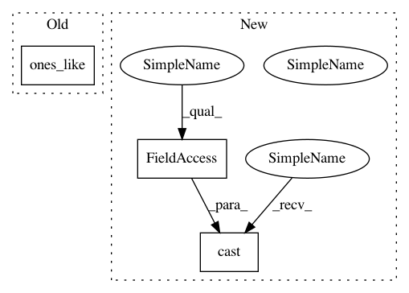

85cb4440b63de8744ddfc9a213f2cdad535d5224,tensorflow_ranking/python/losses_impl.py,SigmoidCrossEntropyLoss,compute_unreduced_loss,#SigmoidCrossEntropyLoss#,1025
Before Change
utils.is_label_valid(labels), logits, tf.zeros_like(logits))
losses = tf.compat.v1.nn.sigmoid_cross_entropy_with_logits(
labels=labels, logits=logits)
return losses, tf.ones_like(losses)
class MeanSquaredLoss(_PointwiseLoss):
Implements the means squared error loss.
After Change
logits = tf.compat.v1.where(mask, logits, tf.zeros_like(logits))
losses = tf.compat.v1.nn.sigmoid_cross_entropy_with_logits(
labels=labels, logits=logits)
return losses, tf.cast(mask, dtype=tf.float32)
class MeanSquaredLoss(_PointwiseLoss):
Implements the means squared error loss.
In pattern: SUPERPATTERN
Frequency: 3
Non-data size: 3
Instances
Project Name: tensorflow/ranking
Commit Name: 85cb4440b63de8744ddfc9a213f2cdad535d5224
Time: 2021-02-03
Author: no-reply@google.com
File Name: tensorflow_ranking/python/losses_impl.py
Class Name: SigmoidCrossEntropyLoss
Method Name: compute_unreduced_loss
Project Name: tensorflow/ranking
Commit Name: a979a9419b90dfaaf50c04b4806748dbcfc0b379
Time: 2021-02-03
Author: no-reply@google.com
File Name: tensorflow_ranking/python/losses_impl.py
Class Name: ClickEMLoss
Method Name: compute_unreduced_loss
Project Name: tensorflow/ranking
Commit Name: 3c2600a74180317086428cff518b1fc995452e64
Time: 2021-02-03
Author: no-reply@google.com
File Name: tensorflow_ranking/python/losses_impl.py
Class Name: MeanSquaredLoss
Method Name: compute_unreduced_loss